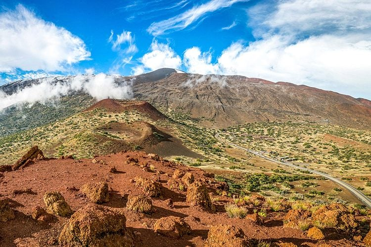

Mount Everest in the Himalayas usually takes this honor, at more than 29,000 feet above sea level; but if we include mountains that aren’t fully above sea level, Hawaii’s Mauna Kea is the winner. Only 13,706 feet of it come up above the water, but if you calculate its height starting from its base at the bottom of the Pacific Ocean, Mauna Kea is 30,610 feet tall, beating Everest by about 1,640 feet. Where Everest was formed by the collision of two tectonic plates (and is still growing taller), Mauna Kea developed because of the volcanic activity that formed the Hawaiian Islands—it’s dormant now, according to the Hawaii Center for Volcanology. Find out the 13 active volcanoes you can actually visit.
